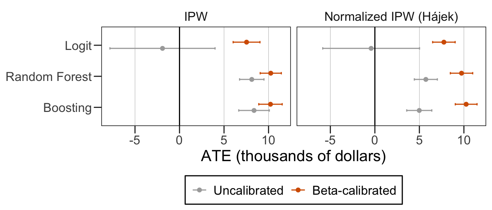

In this Chapter, we evaluate the performance of our framework using the 401(k) pension dataset from Chernozhukov and Hansen (2004), available in the {hdm} R package. This dataset allows us to examine the effect of 401(k) plan participation on net total financial assets (net_tfa).
To test the different estimators under controlled and empirical settings, we divide our empirical study into two complementary exercises:
Exercise 1: Semi-Synthetic Monte Carlo Experiment (Known ATE)
The goal of this experiment is to assess the estimators’ finite-sample properties, bias, and calibration performance against a known ground truth.
Sample Construction: For each of the \(1,000\) Monte Carlo replications, we draw a random subsample of \(n = 2,000\) households from the full dataset.
Feature Space (\(p = 200\)): High dimensionality is induced by giving the learners the \(9\) real observational covariates alongside \(191\) artificially added noisy proxy variables.
Ground Truth: Treatment assignment and outcome generation mechanisms are defined semi-synthetically. This allows us to obtain a known Average Treatment Effect for benchmark comparison.
Computation: The full \(1,000\) replications require approximately \(10\) minutes to run under parallel execution.
Exercise 2: Empirical Analysis on Real 401(k) Data
The aim of this second exercise is to demonstrate the practical application and sensitivity of our calibration and weighting methods on observational data.
Data Scope: We use the full \(e401\) dataset without added noise variables (\(n = 9,915\)).
Estimation Framework: We evaluate Average Treatment Effects using IPW, Normalized IPW (Hájek), AIPW, and Normalized AIPW across uncalibrated and calibrated propensity scores (Platt scaling, Beta calibration, Isotonic regression).
Inference: Standard errors and uncertainty bounds are computed using non-parametric block/multiplier bootstrapping (\(B = 200\)).
Computation: The estimation require approximately \(30\) seconds to run.
output_dir <-"../output/401k/"# Themes for ggplot2 graphssource("../scripts/theme.R")library(hdm)library(ranger)library(xgboost)library(tidyverse)
── Attaching core tidyverse packages ──────────────────────── tidyverse 2.0.0 ──
✔ dplyr 1.2.1 ✔ readr 2.2.0
✔ forcats 1.0.1 ✔ stringr 1.6.0
✔ lubridate 1.9.5 ✔ tibble 3.3.1
✔ purrr 1.2.2 ✔ tidyr 1.3.2
── Conflicts ────────────────────────────────────────── tidyverse_conflicts() ──
✖ dplyr::filter() masks stats::filter()
✖ dplyr::lag() masks stats::lag()
ℹ Use the conflicted package (<http://conflicted.r-lib.org/>) to force all conflicts to become errors
set.seed(20260712)NREP <-1000# Monte Carlo replicationsNSUB <-2000# Size of sub-samplesP_ADD <-191# No. added noisy proxies (p = 9 + P_ADD)KF_MC <-2# No. cross-fitting folds for Monte Carlo analysisKF_RD <-5# No. cross-fitting folds for analysis with real dataCALP <-0.30# Share of sample used only for calibrationTRIM <-0.01# Scores clipping thresholdNBOOT <-200# Bootstrap replication (SE, real data)
platt_cal <-function(p_cal, d_cal, p_new) { z <-logit(clip(p_cal, 1e-6)) fit <-suppressWarnings(glm(d_cal ~ z, family = binomial))expit(coef(fit)[1] +coef(fit)[2] *logit(clip(p_new, 1e-6)))}beta_cal <-function(p_cal, d_cal, p_new) { z1 <-log(clip(p_cal, 1e-6)); z2 <--log(1-clip(p_cal, 1e-6)) fit <-suppressWarnings(glm(d_cal ~ z1 + z2, family = binomial))expit(coef(fit)[1] +coef(fit)[2] *log(clip(p_new, 1e-6))+coef(fit)[3] * (-log(1-clip(p_new, 1e-6))))}iso_cal <-function(p_cal, d_cal, p_new) { o <-order(p_cal); fit <-isoreg(p_cal[o], d_cal[o]) sf <-approxfun(fit$x, fit$yf, method ="constant", rule =2, f =0)pmin(pmax(sf(p_new), 1e-4), 1-1e-4)}
4.3.2 Scoring Models
The function fit_pscore() fits a propensity score model on a sample containing the treatment variable (d) using covariates (X). The estimator can be either a logit, a random forest classifier, or boosting. The function returns the predicted scores on that sample.
fit_pscore <-function(kind, X, d) {if (kind =="logit") { df <-data.frame(d = d, X) fit <-suppressWarnings(glm(d ~ ., data = df, family = binomial))function(Z) clip(suppressWarnings(predict(fit, newdata =data.frame(Z), type ="response")), 1e-6) } elseif (kind =="rf") { fit <-ranger(y =factor(d), x =data.frame(X), probability =TRUE,num.trees =300, min.node.size =2, num.threads =1 )function(Z) predict(fit, data =data.frame(Z))$predictions[, "1"] } elseif (kind =="boost") { fit <-xgboost(data = X, label =factor(d), nrounds =300, max_depth =4,eta =0.1, objective ="binary:logistic", verbose =0,nthread =1 )function(Z) predict(fit, Z) } elsestop(kind)}
The crossfit_scores() function estimates propensity score using cross-fitting.
Cross-fitting is also used to estimate the outcome, through the crossfit_outcome() function. A random forest is used as the estimator.
crossfit_outcome <-function(X, Y, D, K) { folds <-sample(rep(1:K, length.out =length(D))) g0 <- g1 <-rep(NA_real_, length(D))for (k in1:K) { tr <-which(folds != k); te <-which(folds == k)for (d in0:1) { idx <- tr[D[tr] == d] fit <-ranger(y = Y[idx], x =data.frame(X[idx, , drop =FALSE]),num.trees =300, min.node.size =5) pr <-predict(fit, data =data.frame(X[te, , drop =FALSE]))$predictionsif (d ==0) g0[te] <- pr else g1[te] <- pr } }list(g0 = g0, g1 = g1)}
4.3.3 Causal Estimators
The estimators() function computes, based on propensity scores p, outcomes in group 0 (g0) and in group 1 (g1), various estimators for the average treatment effect:
IPW: standard IPW estimator,
IPW-N: Hájek-normalized IPW estimator,
AIPW: AIPW estimator,
AIPW-N: Hájek-normalized AIPW estimator.
#' @param Y Numeric vector of outcomes.#' @param D Numeric vector of treatment indicator.#' @param p Numeric vector of propensity score.#' @param g0 Numeric vector of outcomes in group 0.#' @param g1 Numeric vector of outcomes in group 1.#' #' @returns A vector with the estimated ATE:#' * `IPW`: standard IPW estimator,#' * `IPW-N`: Hájek-normalized IPW estimator,#' * `AIPW`: AIPW estimator,#' * `AIPW-N`: Hájek-normalized AIPW estimator.estimators <-function(Y, D, p, g0, g1) { p <-clip(p) ipw <-mean(Y * (D / p - (1- D) / (1- p))) w1 <- (D / p) /sum(D / p) w0 <- ((1- D) / (1- p)) /sum((1- D) / (1- p)) ipwn <-sum(Y * w1) -sum(Y * w0) aipw <-mean(g1 - g0 + D * (Y - g1) / p - (1- D) * (Y - g0) / (1- p)) aipwn <-mean(g1 - g0) +sum(D * (Y - g1) / p) /sum(D / p) -sum((1- D) * (Y - g0) / (1- p)) /sum((1- D) / (1- p))c(IPW = ipw, `IPW-N`= ipwn, AIPW = aipw, `AIPW-N`= aipwn)}
4.3.4 Calibration Metric
The function compute_ece() computes the Expected Calibration Error, using either quantile-based bins or fixed-width bins.
#' Expected Calibration Error#' @description#' Computes the expected calibration error (ECE) between observed binary#' outcomes and predicted scores (probabilities) using a binned approximation:#' \deqn{\mathrm{ECE} = \sum_{b=1}^{B} w_b \, \lvert \mathrm{acc}_b -#' \mathrm{conf}_b \rvert}#' where \eqn{\mathrm{acc}_b} is the mean of `d` in bin \eqn{b},#' \eqn{\mathrm{conf}_b} is the mean of `scores` in bin \eqn{b}, and#' \eqn{w_b} is the proportion of observations in bin \eqn{b}.#'#' @param d Vector of binary treatments.#' @param scores Vector of scores.#' @param n_bins Number of bins (default to 10).#' @param binning Character string specifying the binning rule (either `"width"`#' or `"quantile"`, see details).#'#' @details#' The binning strategies:#' * `"width"`: equal-width bins over the interval \eqn{[0, 1]}.#' * `"quantile"`: quantile-based breaks computed from `scores`. Repeated#' quantiles can yield duplicate breaks; duplicates are removed#'#' @returns A single non-negative numeric value giving the expected calibration#' error. Values closer to 0 indicate better calibration.compute_ece <-function(d, scores,n_bins =10,binning =c("width", "quantile")) { binning <-match.arg(binning) n <-length(d)# Define bin breaksif (binning =="width") { breaks <-seq(0, 1, length.out = n_bins +1) } else { breaks <-quantile( scores,probs =seq(0, 1, length.out = n_bins +1),names =FALSE#type = 7 ) breaks <-unique(breaks) }# Assign bins bins <-cut( scores,breaks = breaks,include.lowest =TRUE,right =TRUE )# Drop empty bins keep <-!is.na(bins) bins <- bins[keep] d <- d[keep] scores <- scores[keep]# Aggregate statistics bin_counts <-as.numeric(table(bins)) weights <- bin_counts /sum(bin_counts) acc <-tapply(d, bins, mean)if (any(is.na(acc))) acc[which(is.na(acc))] <-0 conf <-tapply(scores, bins, mean)if (any(is.na(conf))) conf[which(is.na(conf))] <-0sum(weights *abs(acc - conf))}
4.4 Monte Carlo Simulations and Real Data Analysis
Warning
The simulations are not run during compilation of this HTML document. We load previously run estimations.
4.4.1 Exercise 1: Semi-Synthetic Monte Carlo Experiment (Known ATE)
First, we generate treatment assignment and outcome, using the real values of 9 covariates.
Then, we proceed to the 1,000 Monte Carlo replications. For each replication, we draw a random subsample of \(n = 2,000\) households from the full dataset, estimate the propensity score and the outcome, and the we compute the various estimators of the average treatment effect.
# This chunk is not evaluated during compilation of this HTML filelibrary(future)library(future.apply)library(progressr)handlers(global =TRUE)handlers("cli")n_cores <-max(1, parallel::detectCores() -1)plan(multisession, workers = n_cores)res_list <-with_progress({# Create a progress step counter p <-progressor(steps = NREP)future_lapply(1:NREP, function(r) {set.seed(1000+ r) sub <-sample(n, NSUB) Xa <- X_aug[sub, ]; e_s <- e_true[sub] Dr <-as.integer(runif(NSUB) < e_s) Yr <- mu0[sub] + tau[sub] * Dr +rnorm(NSUB, 0, 5) sc <-crossfit_scores(Xa, Dr, KF_MC) gg <-crossfit_outcome(Xa, Yr, Dr, KF_MC) r2g0 <-1-mean((mu0[sub] - gg$g0)^2) /var(mu0[sub]) iter_rows <-list()for (m innames(sc)) {for (cb innames(sc[[m]])) { est <-estimators(Yr, Dr, sc[[m]][[cb]], gg$g0, gg$g1) iter_rows[[length(iter_rows) +1]] <-data.frame(rep = r, model = m, calib = cb, estimator =names(est),estimate =as.numeric(est),ece =compute_ece(scores = sc[[m]][[cb]], d = Dr, binning ="quantile"),r2g0 = r2g0, ATE_true = ATE ) } }p() # progress after each iteration finishesdo.call(rbind, iter_rows) }, future.seed =TRUE)})# Combine and save resultsresults_mc <-list_rbind(res_list)plan(sequential) # Close background workers# Export resultswrite_csv(results_mc, paste0(output_dir, "results_mc_pension.csv"))
4.4.2 Exercise 2: Empirical Analysis on Real 401(k) Data
Now we use the full \(e401\) dataset without added noise variables (\(n = 9,915\)).
We estimate the average treatment effects with the various estimators, using calibrated or not propensity scores. Then, we compute standard errors and uncertainty bounds using non-parametric block/multiplier bootstrapping (with \(B = 200\)).
Rows: 48000 Columns: 8
── Column specification ────────────────────────────────────────────────────────
Delimiter: ","
chr (3): model, calib, estimator
dbl (5): rep, estimate, ece, r2g0, ATE_true
ℹ Use `spec()` to retrieve the full column specification for this data.
ℹ Specify the column types or set `show_col_types = FALSE` to quiet this message.
`summarise()` has regrouped the output.
ℹ Summaries were computed grouped by model, calib, and estimator.
ℹ Output is grouped by model and calib.
ℹ Use `summarise(.groups = "drop_last")` to silence this message.
ℹ Use `summarise(.by = c(model, calib, estimator))` for per-operation grouping
(`?dplyr::dplyr_by`) instead.
4.5.2 Exercise 2: Empirical Analysis on Real 401(k) Data
We load the previously run estimations.
real <-read_csv(paste0(output_dir, "estimates_real_pension.csv"))
Rows: 24 Columns: 5
── Column specification ────────────────────────────────────────────────────────
Delimiter: ","
chr (3): model, calib, estimator
dbl (2): est, se
ℹ Use `spec()` to retrieve the full column specification for this data.
ℹ Specify the column types or set `show_col_types = FALSE` to quiet this message.
tb_plot <- real |>filter(str_detect(estimator, "^IPW"), calib %in%c("raw", "beta") ) |>mutate(model =factor( model,levels =c("logit", "rf", "boost"),labels =c("Logit", "Random Forest", "Boosting") ),estimator =factor( estimator,levels =c("IPW", "IPW-N"),labels =c("IPW", "Normalized IPW (Hájek)") ),calib =factor( calib,levels =c("raw", "beta"),labels =c("Uncalibrated", "Beta-calibrated") ) )p_401k_ipw <-ggplot(data = tb_plot,mapping =aes(x = est, y =fct_rev(model), colour = calib)) +geom_errorbar(mapping =aes(xmin = est - se, xmax = est + se),width = .15,position =position_dodge(width = .4) ) +geom_point(position =position_dodge(width = .4)) +geom_vline(xintercept =0) +facet_wrap(~estimator) +labs(x ="ATE (thousands of dollars)", y =NULL ) +scale_colour_manual(NULL,values =c("Uncalibrated"="darkgrey","Beta-calibrated"="#D55E00" ),drop =FALSE# Keep all legend categories even if empty ) +theme_paper() +theme(panel.background =element_rect(fill =NA),panel.grid.major.x =element_line(colour ="gray", linewidth = .2) )p_401k_ipw
Figure 4.6

Chernozhukov, Victor, and Christian Hansen. 2004. “The Effects of 401(k) Participation on the Wealth Distribution: An Instrumental Quantile Regression Analysis.”Review of Economics and Statistics 86 (3): 735–51. https://doi.org/10.1162/0034653041811734.